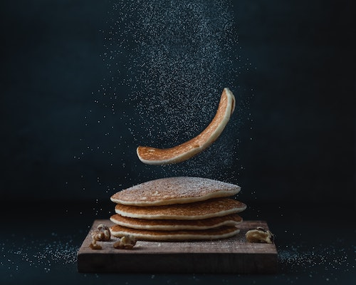

Oatmeal Pancake

Description
This is a delicious breakfast recipe for those mornings when when you wake
up with a craving for something filling yet healthy
It's super easy to make with the least amount of mess and hassle
Ingredients
yields 4 servings
- 1/2 cup all-purpose flour
- 1/2 cup quick cooking oats
- 1 tbsp white sugar
- 1 tsp baking powder
- 1/2 tsp baking soda
- 1/2 tsp salt
- 3/4 cup buttermilk
- 1 tsp vanilla extract
- 2 tbsp vegetable oil
- 1 egg